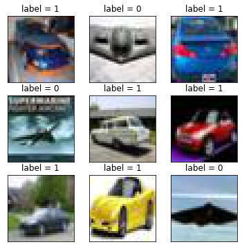
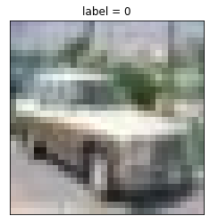
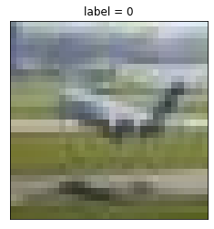

如果需要训练的数据大小不大, 那么可以直接全部读入内存中进行训练, 这样一般效率最高.
但如果需要训练的数据很大, 无法一次载入内存, 那么通常需要在训练的过程中分批读入.
使用tf.data的API可以构建数据输入管道, 轻松处理大量的数据, 不同的数据格式, 以及不同的数据转换.
构建数据管道
从numpy array构建数据管道
1 | # 从numpy array构建数据管道 |
tf.Tensor([5.1 3.5 1.4 0.2], shape=(4,), dtype=float64) tf.Tensor(0, shape=(), dtype=int64)
tf.Tensor([4.9 3. 1.4 0.2], shape=(4,), dtype=float64) tf.Tensor(0, shape=(), dtype=int64)
tf.Tensor([4.7 3.2 1.3 0.2], shape=(4,), dtype=float64) tf.Tensor(0, shape=(), dtype=int64)
tf.Tensor([4.6 3.1 1.5 0.2], shape=(4,), dtype=float64) tf.Tensor(0, shape=(), dtype=int64)
tf.Tensor([5. 3.6 1.4 0.2], shape=(4,), dtype=float64) tf.Tensor(0, shape=(), dtype=int64)
从pandas DataFrame构建数据管道
1 | # 从 pandas DataFrame构建数据管道 |
{'sepal length (cm)': <tf.Tensor: shape=(), dtype=float32, numpy=5.1>, 'sepal width (cm)': <tf.Tensor: shape=(), dtype=float32, numpy=3.5>, 'petal length (cm)': <tf.Tensor: shape=(), dtype=float32, numpy=1.4>, 'petal width (cm)': <tf.Tensor: shape=(), dtype=float32, numpy=0.2>} tf.Tensor(0, shape=(), dtype=int64)
{'sepal length (cm)': <tf.Tensor: shape=(), dtype=float32, numpy=4.9>, 'sepal width (cm)': <tf.Tensor: shape=(), dtype=float32, numpy=3.0>, 'petal length (cm)': <tf.Tensor: shape=(), dtype=float32, numpy=1.4>, 'petal width (cm)': <tf.Tensor: shape=(), dtype=float32, numpy=0.2>} tf.Tensor(0, shape=(), dtype=int64)
{'sepal length (cm)': <tf.Tensor: shape=(), dtype=float32, numpy=4.7>, 'sepal width (cm)': <tf.Tensor: shape=(), dtype=float32, numpy=3.2>, 'petal length (cm)': <tf.Tensor: shape=(), dtype=float32, numpy=1.3>, 'petal width (cm)': <tf.Tensor: shape=(), dtype=float32, numpy=0.2>} tf.Tensor(0, shape=(), dtype=int64)
从Python gennerator构建数据管道
1 | # 从Python generator构建数据管道 |
Found 2000 images belonging to 2 classes.
{'0_airplane': 0, '1_automobile': 1}
1 | plt.figure(figsize=(6, 6)) |

从csv文件构建数据管道
1 | # 从csv文件构建数据管道 |
OrderedDict([('PassengerId', <tf.Tensor: shape=(3,), dtype=int32, numpy=array([185, 948, 331], dtype=int32)>), ('Pclass', <tf.Tensor: shape=(3,), dtype=int32, numpy=array([3, 3, 3], dtype=int32)>), ('Name', <tf.Tensor: shape=(3,), dtype=string, numpy=
array([b'Kink-Heilmann, Miss. Luise Gretchen', b'Cor, Mr. Bartol',
b'McCoy, Miss. Agnes'], dtype=object)>), ('Sex', <tf.Tensor: shape=(3,), dtype=string, numpy=array([b'female', b'male', b'female'], dtype=object)>), ('Age', <tf.Tensor: shape=(3,), dtype=float32, numpy=array([ 4., 35., 0.], dtype=float32)>), ('SibSp', <tf.Tensor: shape=(3,), dtype=int32, numpy=array([0, 0, 2], dtype=int32)>), ('Parch', <tf.Tensor: shape=(3,), dtype=int32, numpy=array([2, 0, 0], dtype=int32)>), ('Ticket', <tf.Tensor: shape=(3,), dtype=string, numpy=array([b'315153', b'349230', b'367226'], dtype=object)>), ('Fare', <tf.Tensor: shape=(3,), dtype=float32, numpy=array([22.025 , 7.8958, 23.25 ], dtype=float32)>), ('Cabin', <tf.Tensor: shape=(3,), dtype=string, numpy=array([b'', b'', b''], dtype=object)>), ('Embarked', <tf.Tensor: shape=(3,), dtype=string, numpy=array([b'S', b'S', b'Q'], dtype=object)>)]) tf.Tensor([1. 0. 1.], shape=(3,), dtype=float32)
OrderedDict([('PassengerId', <tf.Tensor: shape=(3,), dtype=int32, numpy=array([1228, 57, 1014], dtype=int32)>), ('Pclass', <tf.Tensor: shape=(3,), dtype=int32, numpy=array([2, 2, 1], dtype=int32)>), ('Name', <tf.Tensor: shape=(3,), dtype=string, numpy=
array([b'de Brito, Mr. Jose Joaquim', b'Rugg, Miss. Emily',
b'Schabert, Mrs. Paul (Emma Mock)'], dtype=object)>), ('Sex', <tf.Tensor: shape=(3,), dtype=string, numpy=array([b'male', b'female', b'female'], dtype=object)>), ('Age', <tf.Tensor: shape=(3,), dtype=float32, numpy=array([32., 21., 35.], dtype=float32)>), ('SibSp', <tf.Tensor: shape=(3,), dtype=int32, numpy=array([0, 0, 1], dtype=int32)>), ('Parch', <tf.Tensor: shape=(3,), dtype=int32, numpy=array([0, 0, 0], dtype=int32)>), ('Ticket', <tf.Tensor: shape=(3,), dtype=string, numpy=array([b'244360', b'C.A. 31026', b'13236'], dtype=object)>), ('Fare', <tf.Tensor: shape=(3,), dtype=float32, numpy=array([13. , 10.5 , 57.75], dtype=float32)>), ('Cabin', <tf.Tensor: shape=(3,), dtype=string, numpy=array([b'', b'', b'C28'], dtype=object)>), ('Embarked', <tf.Tensor: shape=(3,), dtype=string, numpy=array([b'S', b'S', b'C'], dtype=object)>)]) tf.Tensor([0. 1. 1.], shape=(3,), dtype=float32)
从文本文件构建数据管道
1 | # 从文本文件构建数据管道 |
tf.Tensor(b'1,0,3,"Braund, Mr. Owen Harris",male,22,1,0,A/5 21171,7.25,,S', shape=(), dtype=string)
tf.Tensor(b'2,1,1,"Cumings, Mrs. John Bradley (Florence Briggs Thayer)",female,38,1,0,PC 17599,71.2833,C85,C', shape=(), dtype=string)
tf.Tensor(b'3,1,3,"Heikkinen, Miss. Laina",female,26,0,0,STON/O2. 3101282,7.925,,S', shape=(), dtype=string)
tf.Tensor(b'4,1,1,"Futrelle, Mrs. Jacques Heath (Lily May Peel)",female,35,1,0,113803,53.1,C123,S', shape=(), dtype=string)
tf.Tensor(b'5,0,3,"Allen, Mr. William Henry",male,35,0,0,373450,8.05,,S', shape=(), dtype=string)
从文件路径构建数据管道
1 | ds = tf.data.Dataset.list_files("./data/cifar2/train/*/*.jpg") |
tf.Tensor(b'./data/cifar2/train/0_airplane/1625.jpg', shape=(), dtype=string)
tf.Tensor(b'./data/cifar2/train/1_automobile/3325.jpg', shape=(), dtype=string)
tf.Tensor(b'./data/cifar2/train/1_automobile/3621.jpg', shape=(), dtype=string)
tf.Tensor(b'./data/cifar2/train/0_airplane/1615.jpg', shape=(), dtype=string)
tf.Tensor(b'./data/cifar2/train/1_automobile/4356.jpg', shape=(), dtype=string)
1 | from matplotlib import pyplot as plt |


从TFRecord构建数据管道
TFRecord是一种二进制格式, 可以高效地读取/传输数据, 当一些数据在预处理好以后, 可能会重复使用时, 可以考虑TFRecord格式.
TFRecord需要首先将原始数据序列化保存, 然后在读取的时候在进行相应的解析.
1 | import tensorflow as tf |
1 | def _bytes_feature(value): |
1 | # 原始数据 |
1 | # 序列化并保存为tfrecord |
1 | # 读取tfrecord文件 |
1 | {'a': 1, 'b': 0.1, 'c': "a", 'd': [1 2 3]} |
应用数据转换
Dataset数据结构应用非常灵活, 因为它本质上是一个Sequece序列, 其每个元素可以是各种类型, 例如可以是张量, 列表, 字典, 也可以是Dataset.
Dataset包含了非常丰富的数据转换功能.
- map: 将转换函数映射到数据集每一个元素.
- flat_map: 将转换函数映射到数据集的每一个元素, 并将嵌套的Dataset压平.
- interleave: 效果类似flat_map, 但可以将不同来源的数据夹在一起.
- filter: 过滤掉某些元素.
- zip: 将两个长度相同的Dataset横向铰合.
- concatenate: 将两个Dataset纵向连接.
- reduce: 执行归并操作.
- batch: 构建批次, 每次放一个批次. 比原始数据增加一个维度. 其逆操作为unbatch.
- padded_batch: 构建批次, 类似batch, 但可以填充到相同的形状.
- window: 构建滑动窗口, 返回Dataset of Dataset.
- shuffle: 数据顺序洗牌.
- repeat: 重复数据若干次, 不带参数时, 重复无数次.
- shard: 采样, 从某个位置开始隔固定距离采样一个元素.
- take: 采样, 从开始位置取前几个元素.
1 | # map: 将转换函数映射到数据集每一个元素 |
tf.Tensor([b'hello' b'world'], shape=(2,), dtype=string)
tf.Tensor([b'hello' b'China'], shape=(2,), dtype=string)
tf.Tensor([b'hello' b'Beijing'], shape=(2,), dtype=string)
1 | # flat_map: 将转换函数映射到数据集的每一个元素, 并将嵌套的Dataset压平 |
tf.Tensor(b'hello', shape=(), dtype=string)
tf.Tensor(b'world', shape=(), dtype=string)
tf.Tensor(b'hello', shape=(), dtype=string)
tf.Tensor(b'China', shape=(), dtype=string)
tf.Tensor(b'hello', shape=(), dtype=string)
tf.Tensor(b'Beijing', shape=(), dtype=string)
1 | # interleave: 效果类似flat_map, 但可以将不同来源的数据夹在一起 |
tf.Tensor(b'hello', shape=(), dtype=string)
tf.Tensor(b'hello', shape=(), dtype=string)
tf.Tensor(b'hello', shape=(), dtype=string)
tf.Tensor(b'world', shape=(), dtype=string)
tf.Tensor(b'China', shape=(), dtype=string)
tf.Tensor(b'Beijing', shape=(), dtype=string)
1 | # filter: 过滤掉某些元素。 |
tf.Tensor(b'hello China', shape=(), dtype=string)
tf.Tensor(b'hello Beijing', shape=(), dtype=string)
1 | # zip: 将两个长度相同的Dataset横向铰合。 |
0 3 6
1 4 7
2 5 8
1 | # condatenate: 将两个Dataset纵向连接。 |
tf.Tensor(0, shape=(), dtype=int64)
tf.Tensor(1, shape=(), dtype=int64)
tf.Tensor(2, shape=(), dtype=int64)
tf.Tensor(3, shape=(), dtype=int64)
tf.Tensor(4, shape=(), dtype=int64)
tf.Tensor(5, shape=(), dtype=int64)
1 | # reduce: 执行归并操作。 |
<tf.Tensor: shape=(), dtype=float32, numpy=15.0>
1 | # batch: 构建批次, 每次放一个批次. 比原始数据增加一个维度. 其逆操作为unbatch |
tf.Tensor([0 1 2 3], shape=(4,), dtype=int64)
tf.Tensor([4 5 6 7], shape=(4,), dtype=int64)
tf.Tensor([ 8 9 10], shape=(3,), dtype=int64)
1 | # padded_batch: 构建批次, 类似batch, 但可以填充到相同的形状 |
tf.Tensor(
[[1 2 0 0]
[3 4 5 0]], shape=(2, 4), dtype=int32)
tf.Tensor(
[[6 7 0 0]
[8 0 0 0]], shape=(2, 4), dtype=int32)
1 | # window: 构建滑动窗口, 返回Dataset of Dataset |
WARNING:tensorflow:AutoGraph could not transform <function <lambda> at 0x7fcb59acb9e0> and will run it as-is.
Cause: could not parse the source code:
3, shift=1).flat_map(lambda x: x.batch(3, drop_remainder=True))
This error may be avoided by creating the lambda in a standalone statement.
WARNING: AutoGraph could not transform <function <lambda> at 0x7fcb59acb9e0> and will run it as-is.
Cause: could not parse the source code:
3, shift=1).flat_map(lambda x: x.batch(3, drop_remainder=True))
This error may be avoided by creating the lambda in a standalone statement.
tf.Tensor([0 1 2], shape=(3,), dtype=int64)
tf.Tensor([1 2 3], shape=(3,), dtype=int64)
tf.Tensor([2 3 4], shape=(3,), dtype=int64)
tf.Tensor([3 4 5], shape=(3,), dtype=int64)
tf.Tensor([4 5 6], shape=(3,), dtype=int64)
tf.Tensor([5 6 7], shape=(3,), dtype=int64)
tf.Tensor([6 7 8], shape=(3,), dtype=int64)
tf.Tensor([7 8 9], shape=(3,), dtype=int64)
tf.Tensor([ 8 9 10], shape=(3,), dtype=int64)
tf.Tensor([ 9 10 11], shape=(3,), dtype=int64)
1 | #shuffle: 数据顺序洗牌. |
tf.Tensor(3, shape=(), dtype=int64)
tf.Tensor(2, shape=(), dtype=int64)
tf.Tensor(6, shape=(), dtype=int64)
tf.Tensor(7, shape=(), dtype=int64)
tf.Tensor(8, shape=(), dtype=int64)
tf.Tensor(1, shape=(), dtype=int64)
tf.Tensor(10, shape=(), dtype=int64)
tf.Tensor(9, shape=(), dtype=int64)
tf.Tensor(0, shape=(), dtype=int64)
tf.Tensor(4, shape=(), dtype=int64)
tf.Tensor(5, shape=(), dtype=int64)
tf.Tensor(11, shape=(), dtype=int64)
1 | # repeat: 重复数据若干次, 不带参数时, 重复无数次 |
tf.Tensor(0, shape=(), dtype=int64)
tf.Tensor(1, shape=(), dtype=int64)
tf.Tensor(2, shape=(), dtype=int64)
tf.Tensor(0, shape=(), dtype=int64)
tf.Tensor(1, shape=(), dtype=int64)
tf.Tensor(2, shape=(), dtype=int64)
tf.Tensor(0, shape=(), dtype=int64)
tf.Tensor(1, shape=(), dtype=int64)
tf.Tensor(2, shape=(), dtype=int64)
1 | # shard: 采样, 从某个位置开始隔固定距离采样一个元素 |
tf.Tensor(1, shape=(), dtype=int64)
tf.Tensor(4, shape=(), dtype=int64)
tf.Tensor(7, shape=(), dtype=int64)
tf.Tensor(10, shape=(), dtype=int64)
1 | # take: 采样, 从开始位置取前几个元素 |
[0, 1, 2]
提升管道性能
训练深度学习模型常常会非常耗时.
模型训练的耗时主要来自于两个部分, 一部分来自数据准备, 另一部分来自参数迭代.
参数迭代过程的耗时通常依赖于GPU来提升.
而数据准备过程的耗时则可以通过构建高效的数据管道进行提升.
以下是一些构建高效数据管道的建议.
- 使用
prefetch方法让数据准备和参数迭代两个过程相互并行. - 使用
interleave方法可以让数据读取过程多进程执行,并将不同来源数据夹在一起. - 使用
map时设置num_parallel_calls让数据转换过程多进行执行. - 使用
cache方法让数据在第一个epoch后缓存到内存中, 仅限于数据集不大情形. - 使用
map转换时, 先batch, 然后采用向量化的转换方法对每个batch进行转换
prefetch 方法
使用prefetch方法让数据准备和参数迭代两个过程相互并行.
1 | import tensorflow as tf |
1 | import time |
1 | # 训练过程预计耗时 10 * 2 + 10 * 1 = 30s |
==============================00:31:27
start training...
==============================00:31:57
end training...
1 | # 使用 prefetch 方法让数据准备和参数迭代两个过程相互并行 |
==============================00:33:49
start training with prefetch...
==============================00:34:10
end training...
interleave
使用interleave方法可以让数据读取过程多进程执行, 并将不同来源数据夹在一起.
1 | ds_files = tf.data.Dataset.list_files("./data/titanic/*.csv") |
tf.Tensor(b'892,0.0,3,"Kelly, Mr. James",male,34.5,0,0,330911,7.8292,,Q', shape=(), dtype=string)
tf.Tensor(b'893,1.0,3,"Wilkes, Mrs. James (Ellen Needs)",female,47.0,1,0,363272,7.0,,S', shape=(), dtype=string)
tf.Tensor(b'894,0.0,2,"Myles, Mr. Thomas Francis",male,62.0,0,0,240276,9.6875,,Q', shape=(), dtype=string)
tf.Tensor(b'895,0.0,3,"Wirz, Mr. Albert",male,27.0,0,0,315154,8.6625,,S', shape=(), dtype=string)
1 | ds_files = tf.data.Dataset.list_files("./data/titanic/*.csv") |
tf.Tensor(b'1,0,3,"Braund, Mr. Owen Harris",male,22,1,0,A/5 21171,7.25,,S', shape=(), dtype=string)
tf.Tensor(b'892,0.0,3,"Kelly, Mr. James",male,34.5,0,0,330911,7.8292,,Q', shape=(), dtype=string)
tf.Tensor(b'2,1,1,"Cumings, Mrs. John Bradley (Florence Briggs Thayer)",female,38,1,0,PC 17599,71.2833,C85,C', shape=(), dtype=string)
tf.Tensor(b'893,1.0,3,"Wilkes, Mrs. James (Ellen Needs)",female,47.0,1,0,363272,7.0,,S', shape=(), dtype=string)
tf.Tensor(b'3,1,3,"Heikkinen, Miss. Laina",female,26,0,0,STON/O2. 3101282,7.925,,S', shape=(), dtype=string)
tf.Tensor(b'894,0.0,2,"Myles, Mr. Thomas Francis",male,62.0,0,0,240276,9.6875,,Q', shape=(), dtype=string)
tf.Tensor(b'4,1,1,"Futrelle, Mrs. Jacques Heath (Lily May Peel)",female,35,1,0,113803,53.1,C123,S', shape=(), dtype=string)
tf.Tensor(b'895,0.0,3,"Wirz, Mr. Albert",male,27.0,0,0,315154,8.6625,,S', shape=(), dtype=string)
num_parallel_calls
使用map时设置num_parallel_calls让数据转换过程多进行执行.
1 | ds = tf.data.Dataset.list_files("./data/cifar2/train/*/*.jpg") |
1 | # 单进程转换 |
==============================11:02:15
start transformation...
==============================11:02:19
end transformation...
1 | # 多进程转换 |
==============================11:02:52
start parallel transformation...
==============================11:02:53
end parallel transformation...
cache
使用cache方法让数据在第一个epoch后缓存到内存中, 仅限于数据集不大情形.
1 | import time |
==============================18:17:35
start training...
==============================18:17:45
epoch = 0 ended
==============================18:17:56
epoch = 1 ended
==============================18:18:06
epoch = 2 ended
==============================18:18:06
end training...
1 | import time |
==============================18:19:13
start training...
==============================18:19:23
epoch = 0 ended
==============================18:19:23
epoch = 1 ended
==============================18:19:23
epoch = 2 ended
==============================18:19:23
end training...
batch
使用map转换时, 先batch, 然后采用向量化的转换方法对每个batch进行转换.
1 | # 先map后batch |
==============================18:20:50
start scalar transformation...
==============================18:20:53
end scalar transformation...
1 | # 先batch后map |
==============================18:21:20
start vector transformation...
==============================18:21:20
end vector transformation...